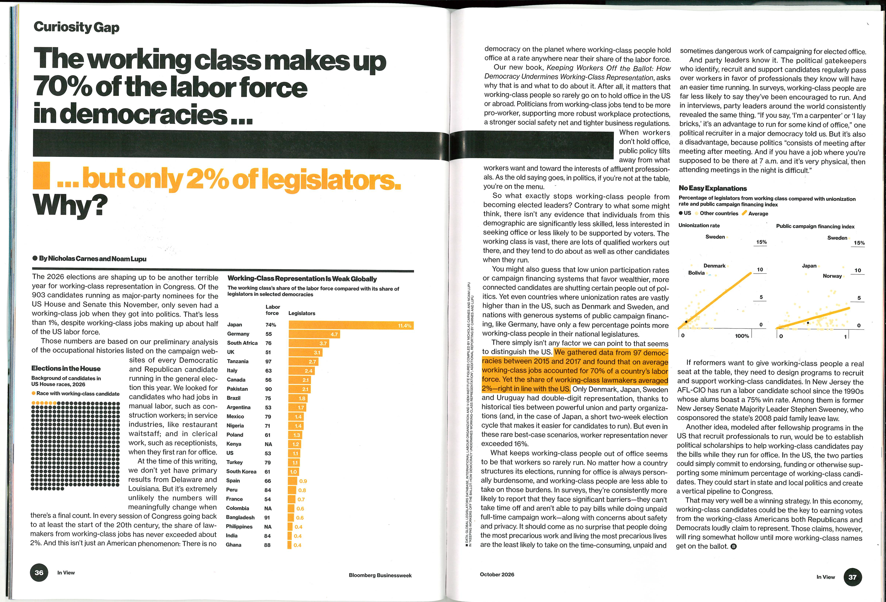
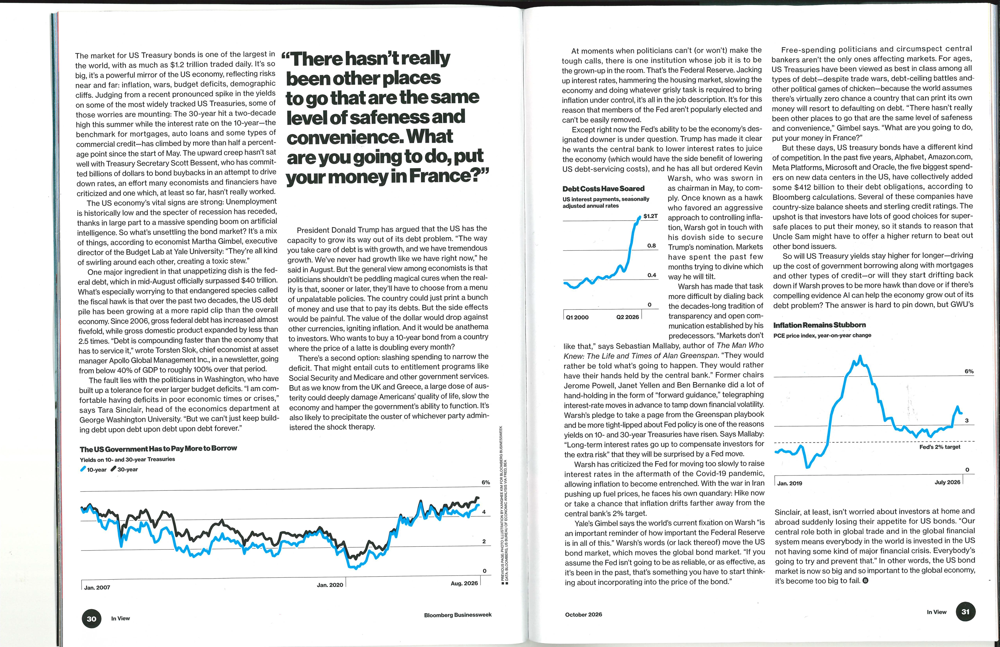

Print
Bloomberg Businessweek
2026 — Present

October 2026 Bloomberg Businessweek, In View, pp. 36–37 Graphics Read the story

October 2026 Bloomberg Businessweek, In View, pp. 30–31 Graphics Read the story